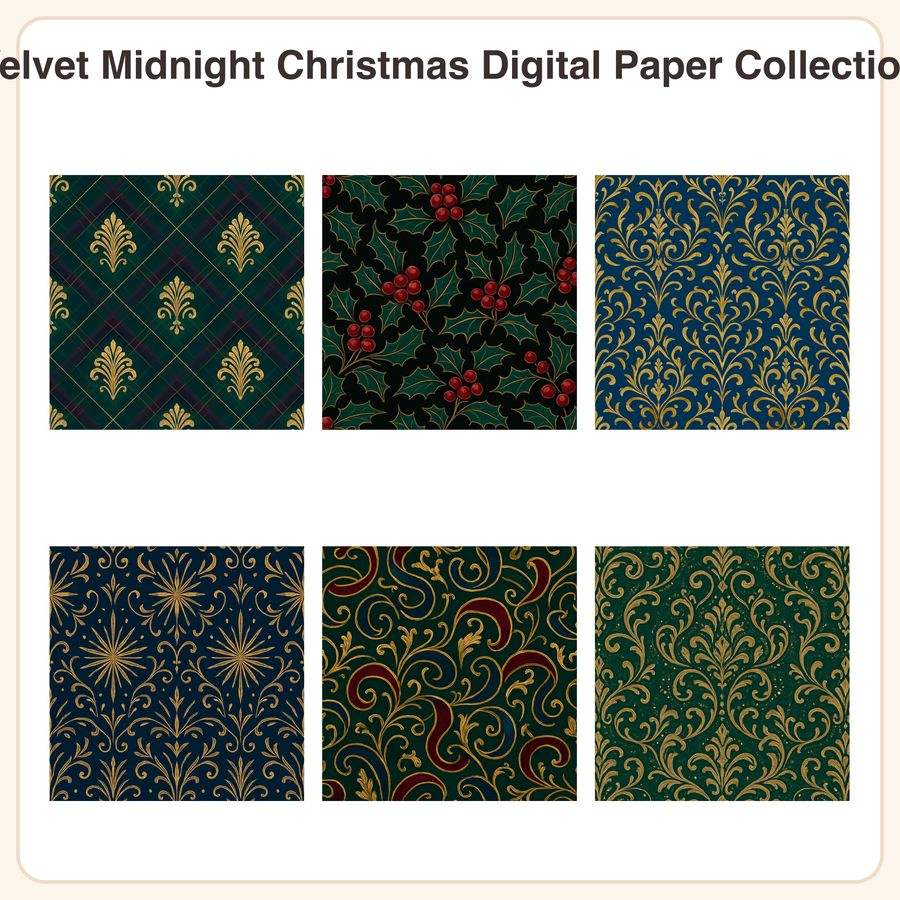

$4.99
View on EtsyAdd a moody, upscale twist to your holiday projects with the Velvet Midnight Christmas Digital Paper Collection — six richly hued jewel-tone patterns designed for crafters and shop owners who want more than the usual red-and-green cliché. What's Included: • 6 seamless patterns, each in a 3072px square JPEG (12x12in @ 300dpi) • 6 matching repeatable PNG tiles for custom-sized projects • Total of 12 files, delivered as a zipped folder Patterns: 1. Emerald tartan plaid with thin gold pinstripes 2. Ruby holly berries and leaves on deep charcoal 3. Gold filigree ornament shapes on sapphire 4. Star burst pattern in antique gold on midnight navy 5. Velvet ribbon swirls in burgundy and gold 6. Micro dot pattern in gold on deep emerald Style: A deep velvet-inspired palette of emerald, ruby, sapphire, and antique gold, featuring subtle metallic-look texture linework and elegant, slightly baroque motifs rendered as flat vector seamless tiles. How to Use: Print at home or through a professional printer for gift wrap, scrapbook backgrounds, party decor, packaging inserts, planner covers, or digital design projects. The PNG tiles are seamless and repeatable, so you can scale them to any size for custom backgrounds or product mockups. File Formats & Sizes: • JPEG: 3072x3072px (12x12in, 300dpi) • PNG: seamless repeatable tiles, transparent-ready for custom tiling License: For personal use and small business commercial use (up to 500 finished units). Please do not resell, share, or redistribute the digital files themselves, even if edited. Honest Disclosure: These designs were created in-house by our shop with the help of AI tools, then refined and prepared for print by hand. No physical item will be shipped — this is a digital download only.